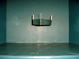
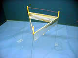
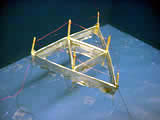

|
 |
 |
|
 |
Subject: RE: Lifter Research Information Date: Wed, 1 May 2002 23:05:39 -0500
Dear Tim,
Happy to receive your
nice letter, and by visiting your website at
http://www.americanantigravity.com
I was able to see the
remarkable experimental work you have been doing. I'm particularly
impressed when researchers such as yourself also publish detailed
information on exactly how to build the devices and the circuits and
repeat the experiments. So researchers wishing to test this area
themselves, can in fact built a fairly inexpensive lifter and experiment
with it. They can prove for themselves that it works, and that it
really doesn't fit the electrodynamics they were taught in university.
Congratulations also on your videos taken of actual tests. I feel that
this particular research with "lifter" technology is long overdue, and
the conventional scientific community has been much remiss for decades
in not vigorously funding research in this area.
What I would wish is
that the hard-working and dedicated experimental researchers such as
yourself could be funded by the scientific community, DoE, or large
nonprofit organizations, so that a large group of determined
researchers keeps digging into the phenomenology. In any new area where
things are not yet understood, it is the phenomenology and its detailed
exploration that eventually leads to a breakthrough understanding of the
field. Once that happens, then good theoretical models --- and
technology and engineering --- follow apace. So in my view, what you
are doing is of extraordinary importance to the development of science
and particularly to the further extension of physics. It also is the
forerunner to developing actual usable technology. If ever we really
wish to explore space, we are certainly going to have to find and
develop better propulsion and lifting systems than rockets! If the
nation can afford to spend 50 years and billions of dollars attempting
to conquer hot fusion, and still seem to be another 50 years from it,
then surely we can afford to spend 20 years and a billion or two dollars
on this vital area of research with such great potential.
Also it was good to
see so many fine researchers in this field! Just to mention a few,
there is Tim Ventura (yourself), Jeff Cameron, Hal Puthoff, Jean-Louis
Naudin (and quite a few other fellows corresponding on his website),
Woodward, Rueda, Haisch, Campbell, Ning Li (now returned to China),
Podkletnov, Serrano, Kulikov, Corum, Cox, Black, and others too numerous
to mention. Also, an appreciable patenting activity has been occurring,
with many patents being issued (perhaps more than 100). Even NASA has a
lifter patent assigned to it that seems to be a variation of the T. T.
Brown capacitor effect.
Aside from these
researchers, some distinguished theoreticians and academicians are also
working in directly related areas. There are many theories or branch
theories of gravity, of course. Sachs's unified field theory -- which
is engineerable by higher group symmetry electrodynamics, including
SU(2)XSU(2) advocated by Barrett and O(3) advocated by Evans and Vigier
-- is a case in point. The Alpha Foundation's Institute for Advanced
Study (AIAS), spearheaded by Evans, has in fact published a paper on
antigravity: it is M. W. Evans et al.,
"Anti-Gravity Effects in the Sachs Theory of Electrodynamics,"
Foundations of Physics Letters, 14(6), Dec. 2001, p. 601-605. Many
other fine papers struggling with the problem of positive and negative
gravity are also being published.
The real
problem, I feel, is the hopelessness of conventional classical
electrodynamics and electrical engineering with respect to this work.
E.g., the standard EE model erroneously assumes an inert vacuum and a
flat local spacetime. The inane EM model used in every electrical
engineering department actually excludes every charge in the universe as
an acceptable Maxwellian system. Instead, it is unable to model or
solve the "source charge problem", the fact that the charge sits there
and continuously pours out real, measurable EM energy in all directions
in 3-space, with absolutely no observable EM energy input. In short,
the classical EM model and electrical engineering assume that every
charge in the universe is a perpetual motion machine, freely creating
energy out of nothing, continuously, and pouring it out. The solution
to that problem has been called the "most difficult problem" in quantal
and classical electrodynamics (Sen,
Fields and/or Particles, Academic Press, London and New York,
1968, p. viii.). Yet the basis for its solution has been in particle
physics for 45 years, with the award of the Nobel prize to Lee and Yang
in 1957. One of the things proved by Wu et al. in early 1957, when they
proved Lee and Yang's strong 1957 prediction of broken symmetry, is the
broken symmetry of opposite charges --- such as are on the opposite ends
of any dipole. Take an "isolated charged particle", for example. As is
well-known, it is clustered around by virtual charges of opposite
charges in the vacuum -- the well-known polarization of the vacuum.
That effect has to be accounted for, since it shields part of the charge
and the magnitude of the charge that is observed is dramatically
different from the magnitude of the "bare" charge if there were no such
shielding. Now take a differential piece of the observable charge, and
pair it with any of those virtual charges of opposite sign. Voila! The
"isolated charge" is a set of composite dipoles, so it is a set of
broken symmetries. This means rigorously that it continuously absorbs
virtual photon energy from the vacuum, transduced it into real
observable photons, and pours them out at the speed of light in all
directions in 3-space, creating the associated fields and potentials and
their energy, eventually reaching across all space. That is the
solution to this "most difficult problem" in electrodynamics. We
published that solution in 2000. (Bearden, "Giant Negentropy from the
Common Dipole," Proceedings of Congress 2000, St. Petersburg,
Russia, Vol. 1, July 2000 , p. 86-98. Also published in Journal of
New Energy, 5(1), Summer 2000, p. 11-23. Also carried on DoE
restricted website
http://www.ott.doe.gov/electromagnetic/ and
www.cheniere.org.). Later we uncovered very powerful support of
that proposed solution, from quantum field theory and a slight
reinterpretation (slight correction) of Whittaker's 1903 decomposition
of the scalar potential. The charge is therefore a special kind of
system continuously extracting real, usable EM energy from the vacuum.
So is every dipole, including the source dipole formed between the
dipoles of a battery or generator.
Now we
can understand how every generator and battery already pours out
enormously more energy than the shaft energy input to the generator or
the chemical energy available to the battery, as Heaviside discovered,
Poynting never considered, and Lorentz arbitrarily discarded.
It also
means that there is not now, and there never has been, a single
electrical engineering department, professor, or textbook that even
teaches what powers and electrical circuit or the power grid. It isn't
the tranducing the shaft energy input to the generator or the chemical
energy available to the battery. All that burning of hydrocarbons, use
of nuclear fuel cells, building of dams and windmills, of itself does
not directly place a single joule of energy on the power line. Instead,
all that mess just makes the dipole --- that the standard closed current
loop circuit destroys faster than the circuit can power its external
load. So we have to keep destroying and polluting the biosphere, ruining
the planet, etc. just to keep restoring the dipoles in our primary power
generators etc., while the engineers happily design the systems to keep
destroying those dipoles faster than they can use some of the extracted
vacuum energy to power their loads.
Also, by
assuming a flat local spacetime, the EE model assumes there can be no
change in the energy density of the vacuum --- falsified by every EM
wave, potential, and field. If rigorously applied to itself, the model
-- with Lorentz symmetrical regauging --- "eats itself" and is an
oxymoron. The easiest thing in all the world is to extract EM energy
--- enormous amounts in a continuous great flow --- anywhere in the
universe. Just make a little dipole or charge up something. That's
it. The only problem is to intercept some of the freely flowing energy,
collect it in a circuit, and then dissipate it in a load without using
half the collected energy to destroy the source dipole that is gushing
forth the EM energy extracted from the vacuum.
The
electrical engineer's Lorentz-regauged model forbids any open EM system
far from equilibrium with an active environment (the local active vacuum
and the local curvatures of spacetime). Consequently, it forbids every
electrical charge and magnetic pole. But it also assumes that all the
EM energy processed comes from those very source charges. I.e., it is
therefore an oxymoron. This is also part of the problem that has
prevented practical electrogravitation. The huge extra Heaviside
nondiverged energy flow component is not accounted and not used, but
just wasted.
For
example, Laithwaite published a paper pointing out the implications of
the extra energy flow term in Heaviside's energy flow theory. As you
know, Heaviside and Poynting independently and simultaneously discovered
EM energy flow, in the 1880s after Maxwell was deceased. It is known
that, from the terminals of a generator (from the source dipolarity,
once created), there pours out a continuous stream of EM energy flow,
filling all space around the conductors of the external circuit.
Poynting's theory considered only that component of this external energy
flow that is intercepted by the external circuit and diverged into the
conductors to power the Drude electrons. Heaviside, on the other hand,
included not only that "caught" component, but also included the
remaining component that is not intercepted by the external circuit, but
misses it and is wasted. The wasted energy flow is orders of magnitude
greater than the energy flow caught. However, this meant that from
every generator there already pours out far more EM energy than the
amount of mechanical shaft energy input to the generator --- and that is
indeed true. Since no one could explain what could possibly be
furnishing such a torrent of excess energy, obviously there was a bit of
a problem with the law of energy conservation as it was understood at
the time. Since then, the broken symmetry of opposite charges --- such
as the opposite charges on the ends of the source dipole, once formed
between the generator terminals --- has been proven in particle
physics. In short, now it is known (in particle physics, not electrical
engineering) that the source dipole, once formed, continually absorbs
virtual photons from the seething vacuum, transduces (coherently
integrates) it into real observable photons, and pours out that torrent
of real, observable photon energy streaming from those generator
terminals. This is the solution to the problem that so puzzled
Heaviside and so vexed Lorentz, goading him into creating a neat little
trick to get rid of the problem itself.
Unable to
solve the problem of the source of that enormous EM energy flow from the
terminals of every generator or battery, H.A. Lorentz, who understood
the work of both Heaviside and Poynting, reasoned that the excess
nondiverged Heaviside energy flow component had "no physical
significance" since it did not power anything. So Lorentz integrated
the energy flow vector around a closed surface assumed around any volume
element of interest. This little trick arbitrarily and neatly disposed
of all accountability of the bothersome Heaviside component, while
retaining and accounting the Poynting energy flow component. All EM
textbooks and electrical engineering to this day repeat Lorentz's
integration trick, and dutifully (and arbitrarily) dismiss that
Heaviside component. It is still present in every field/charge reaction
and outside every electrical circuit, since the Bohren experiment proves
its existence, and is readily replicated at any proper university
laboratory. So the irony is that electrodynamics and electrical
engineering -- as they are still being taught in university ---
arbitrarily dismiss this very large
nondiverged, nonreacting component of EM energy surrounding every
field/particle reaction. Even the EM fields are misdefined in terms of
what is diverged or wrenched out of them -- a gross non sequitur. My
point is that every EM interaction involves far greater EM energy than
is presently accounted for, since Lorentz discarded that huge Heaviside
non-diverged component.
In honor
of Heaviside, I have nominated that very large unaccounted Heaviside
component as what is responsible for the excess gravity holding the arms
of the spiral galaxies together --- as a solution to the "dark matter
and then dark energy" problem. (Bearden, "Dark Matter or Dark Energy?",
Journal of New Energy,
4(4), Spring 2000, p. 4-11.)
Heaviside
eventually realized in his latter hermit years --- spent in a little
garret apartment -- that his extra energy flow component (which flowed
in closed loops, in his theory) had gravitational significance. After
his death, thieves ransacked his little garret apartment. Later,
beneath the floorboards where he had stowed his draft notes, there were
found handwritten papers by Heaviside, developing his theory of unified
electrogravitation, with that extra component of energy now converted to
a gravitational component. See E. R. Laithwaite, “Oliver Heaviside ---
establishment shaker,” Electrical
Review, 211(16), Nov. 12, 1982, p. 44-45. Laithwaite felt
that Heaviside’s postulation that a flux of electrogravitational energy
combines with the (E´H)
electromagnetic energy flux, could shake the foundations of physics.
This is
interesting and possibly of great significance, because of the
tremendous magnitude of that long-neglected excess energy flow
component.
In
addition to publishing a paper on the potential significance of
Heaviside's gravitational work, Laithwaite even suggested that Newton's
laws of motion might be in trouble. A presentation of this work to the
Royal Institution in 1973 and a demonstration using a heavy gyroscope to
prove it to the assembled Royal Institution members, led to the rather
abrupt curtailment of Laithwaite's rising career. During the lecture he
simply showed them that a very heavy gyroscope, difficult to lift when
not turning, could be lifted easily with one hand when turning at speed.
Anyone could try it for himself. For the first time in its 200 year
history, the Royal Institution did not publish a proceedings of an
invited discourse --- that one by Laithwaite in 1973. Laithwaite's rise
toward grander things was ended.
In 1970
Laithwaite had also completed and delivered a working model of a device
that continuously moved itself with "indefinite motion", using a linear
motor primary rolled into a cylinder to form the stator of a motor.
Laithwaite showed that, under the proper circumstances, a steel washer
(a little over an inch in diameter) could be made to roll continuously
in a vertical plane around the inside of the stator. Somehow, a
combination of centrifugal force and magnetic attraction (and the
ever-present force of gravity) maintained the washer in contact with the
stator at all times. The little washer would roll indefinitely and
continuously. This working model was delivered by Laithwaite to the
Centennial Center of Science & Technology in Ontario. So far as I am
aware, no one ever tried to analyze Laithwaite's successful experiment
in terms of a unified field theory. We know that Laithwaite worked on
sophisticated gyroscopic systems for the latter years of his life,
finally achieving a mass transfer effect of some kind. He and William
Dawson obtained a patent in 1995, with a U.S. patent following in 1999.
Sadly, Professor Laithwaite died in 1997. We recall that Laithwaite was
for some years a professor at the Imperial College in London, one of the
pioneers of the linear electric motor, and also pioneered portions of
the MagLev (magnetic levitation) train concept. I had the pleasure of
meeting him once, many years ago, at the Imperial College.
A while back, I also
visited Transdimensional Technologies here in Huntsville, where I spoke
to the Chief Scientist Jeff Cameron and his team. One can see their
website at
http://www.tdimension.com/.
Jeff kindly came in
from a day of vacation, and he and his team gave Ken Moore and I some
very good demonstrations of the lifter technology and their rotor
technology as well. I was able to examine the equipment, etc. and can
personally vouch that this experimentation is for real. Pictures of the
rotor device and the simple lifter are posted on the website. The rotor
was tested in vacuum, to prove it is not an ion wind effect. Jeff made
me acquainted with NASA's Breakthrough Propulsion Program (BPP),
established in 1996, which has had very limited funding for some
research in this area and really should be given greater funding and
greater priority. I believe that program, or what is left of it, is
still managed by the Glenn Research Center, sponsored by the Advanced
Space Transportation Program, with its overall management by NASA's
Marshall Space Flight Center here in Huntsville, Alabama. The BPP has
sponsored some important research, and for example the myth that the
lifters could work by ion wind effects has been disproved. Apparently
two or more conferences have been held under the auspices of the BPP
each year, with papers given and experimental results presented. The
real problem in the area seems to be that no one yet has a truly viable
theory, although several have been advanced, at least tentatively.
Cameron and team are now working on what I would call "second
generation" equipment and techniques, have filed several more patents,
and expect to be into practical lift vehicles in about five years.
To finish things off,
I visited Jean-Louis Naudin's website, where a remarkable collection of
photos, videos, information, etc. on lifter technology is given at
http://jnaudin.free.fr/html/lifters.htm . All in all, I spent
quite some time on the web, visiting some other sites as well, in
"catching up" to what has been going on in this field.
All this and my visit
to your website vividly brought back memories of the antigravity
experiment I designed and convinced Floyd Sweet to perform back in 1984,
following a theory I had had since Georgia Tech in 1971. That
experiment worked beautifully, but it absolutely depended upon access to
a COP>>1.0 EM power system. The COP of Sweet's device was 1,500,000 and
it had to be pushed to nearly double that. But the experiment did
reduce the weight of an object (the power device) on the bench by 90%,
at a power level of 1,000 watts. In my view, it proved my theory of
antigravity, but of course that still remains to be seen. Eventually we
published a paper on the device that included that experiment, which
paper is
Floyd
Sweet and T. E. Bearden, "Utilizing Scalar Electromagnetics to Tap
Vacuum Energy," Proceedings of the 26th Intersociety Energy
Conversion Engineering Conference (IECEC '91), Boston,
Massachusetts, 1991, p. 370-375. I wrote the paper, but placed Sweet's
name first, which was appropriate since he invented the VTA (vacuum
triode amplifier) being used to perform the experiment with a new output
section I convinced him to make. Unfortunately, much of the secret of
how Sweet activated his barium ferrite magnets into such powerful
self-oscillation was lost when Sweet later died.
So I was delighted to
hear from you and receive the photos. I'll ask Tony to post this
correspondence on the website in the correspondence section, and also
post the photos for all to see. Those persons interested in further
information can visit your website, that of Transdimensional
Technologies, and Naudin's website and find reams of additional
important information, experimental results, ongoing work and
investigations, etc.
It is my hope that
philanthropic wealthy persons and well-heeled non-profit institutions
will recognize the importance of such research, and that funding will be
made available to you fellows to continue this vital work.
Very best wishes,
Tom Bearden
Dear
Tom:
I've
been involved with Antigravity and Electrogravity research for nearly
ten years, and I've recently brought that experience to bear on the
Lifter project. My involvement with the Lifter project has been
primarily aimed at experimental research and the commercialization of
this technology. Although there is a wealth of new physics involved with
this technology, so many others are involved with understanding the
physics that my skills are better utilized in building and improving on
the existing designs for this technology.
I am the
designer and webmaster of the American Antigravity website, at http://www.americanantigravity.com.
The focus of this site is to conduct experimental research into
commercializing lifter technology by improving the size, payload, and
performance of the current first-generation Lifter technology. While
many others are working on making the Lifter more technologically
advanced, I am working primarily on making it bigger utilizing existing
technologies.
Lifter
technology offers not only a realistic approach to solid-state
propulsion-systems design, but also offers an array of associated
benefits that are only beginning to reveal themselves. The Lifter is a
self-stabilizing device, and tends to resist outside motion from wind
and environmental forces-- that is a big advantage when compared to
current aerospace vehicles that are at the mercy of prevailing winds and
the elements. The Lifter also has a very high specific impulse, which in
experimental terms means that it tends to take off very rapidly during
operation.
I am one
of the most experienced Lifter-builders in the United States at this
point, as I built nearly 30 lifters at this time. I have many hours of
experiece working with this technology, which I use to help educate
others as to how they can successfully replicate these experiments. I
also make a point of documenting my work so that video and notes on it
may be available to the public through my website.
Please
visit my website at
http://www.americanantigravity.com for additional information -- and
if you like the site, please recommend it to a few friends.
Thanks;
Tim
Ventura |